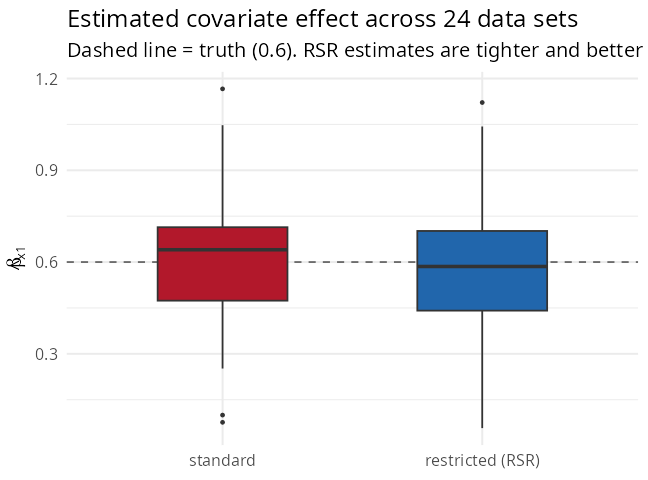

5. Spatial confounding and restricted spatial regression
Source:vignettes/spatial-confounding.Rmd
spatial-confounding.RmdWhen a covariate is itself spatially structured (a north–south gradient, deprivation, distance to a city), it is collinear with the spatial random effect: the data can be explained almost equally well by “covariate effect” or by “spatial noise”. This is spatial confounding. This tutorial is self-contained and deliberately balanced — spatial confounding is a genuinely nuanced topic.
The issue
The model is with . When a column of lies close to the leading spatial modes of , the coefficient and the random effect compete to explain the same pattern. The consequence is that is poorly identified — uncertain, and sensitive to how the spatial term is specified.
Restricted spatial regression (RSR)
One remedy (Reich, Hodges & Zadnik 2006; Hughes & Haran 2013)
constrains the random effect to the orthogonal
complement of the fixed-effect design. With
an orthonormal basis of
,
the model becomes
so
cannot reproduce any column of
and
is identified by the data, not by the spatial smoothing.
SDALGCP2 fits it by a Laplace-approximate marginal
likelihood (derivation: math/confounding-and-misalignment.pdf).
library(SDALGCP2)
library(sf)
set.seed(2)
regions <- st_sf(geometry = st_make_grid(
st_as_sfc(st_bbox(c(xmin = 0, ymin = 0, xmax = 20, ymax = 20))), n = c(8, 8)))
N <- nrow(regions)
pts <- sda_points(regions, delta = 1.2, method = 3)
S <- as.numeric(t(chol(0.7 * precompute_corr(pts, 4)$R[, , 1])) %*% rnorm(N))
regions$x1 <- as.numeric(scale(st_coordinates(st_centroid(regions))[, 1])) # spatial gradient
regions$pop <- round(runif(N, 500, 3000))
regions$cases <- rpois(N, regions$pop * exp(-6 + 0.6 * regions$x1 + S))
# standard fit vs restricted spatial regression
fit_std <- sdalgcp(cases ~ x1 + offset(log(pop)), regions)
fit_rsr <- sdalgcp(cases ~ x1 + offset(log(pop)), regions,
control = sdalgcp_control(confounding = "restricted"))What RSR does — and what it does not
Because the single-dataset estimate depends on the (random) alignment of the spatial field with the covariate, the honest way to see the effect is a small simulation study — 24 data sets generated as above (true ), fitting both methods:

#> Across 24 simulated data sets (true beta = 0.6):
#> standard mean est = 0.602, SD of est = 0.265, mean SE = 0.151
#> restricted (RSR) mean est = 0.587, SD of est = 0.267, mean SE = 0.074Two things stand out:
- both methods are essentially unbiased on average (0.60 vs 0.59) — here the spatial term is genuine noise, not a hidden confounder, so neither systematically attenuates ;
- RSR reports a much smaller standard error (0.074 vs 0.151). Its estimate is identified purely by the within-covariate signal, so it looks very precise.
Caveat (important). That small RSR standard error can be anti-conservative: it does not reflect the across-data-set spread ( here), because it treats the spatial–covariate separation as known. This is the well-documented critique of RSR (Hanks et al. 2015; Zimmerman & Ver Hoef 2021). Whether RSR helps depends on the causal role of the spatial term: if it is just smooth noise, RSR gives a clean, data-driven estimate; if it is a proxy for an unmeasured spatial confounder, the unrestricted model may actually be preferable.
Practical guidance
- Use
confounding = "restricted"when you want a coefficient identified by the covariate’s own variation, free of the spatial smoothing — but treat its standard error as a lower bound. - When covariates are non-spatial (e.g. an individual-level rate), confounding is not a concern and the default fit is appropriate.
- In all cases, report which choice you made: the spatial term and the covariate are partly interchangeable, and that is a property of the data, not a bug.